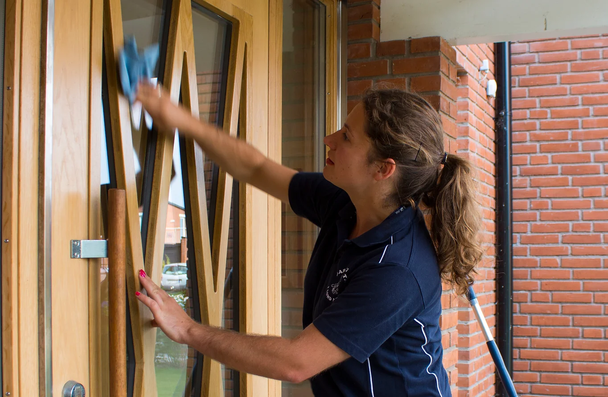
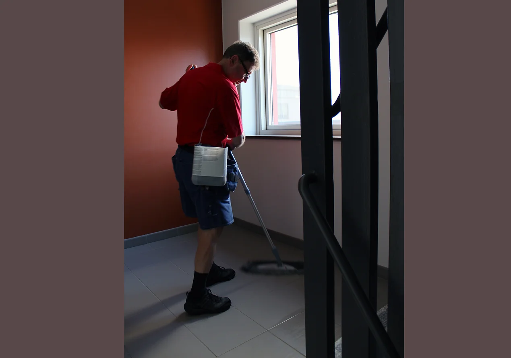

Du som kund ska känna dig trygg med att vår lokalvård är miljöoptimerad. Vi på Garanti-Städ tar hänsyn till miljön och jobbar ständigt för att förbättra vårt miljöarbete i syfte att minimera negativ miljöpåverkan. Detta gör vi bland annat genom att:
Välkommen till
Garanti-Städ i Lund AB
garanterad hög kvalitet
Varför välja oss?
Om ni vill ha en professionell lokalvård som du kan lita på ska ni välja Garanti-Städ!
Men det finns givetvis massor med andra skäl, här är fem av dem:
- Vi skräddarsyr en helhetslösning som passar just er och era behov!
- Vi älskar personlig service.
- Vi bryr oss om miljön. (Läs vår miljöpolicy här)
- Vi har en stabil ekonomi sedan starten 1990 (ex. AAA-certifierade)
- Våra anställda trivs på jobbet och är noggranna. Det märks och syns!
För oss är det viktigt med ansvar. Ansvar för kund, kvalité, miljö samt arbetsmiljö. Det tar vi på allvar.
Läs hur några av våra kunder upplever samarbetet med Garanti-Städ här.
Vill ni ha fler anledningar att välja oss? Ring oss gärna på 070-721 40 43 så får ni veta mer!
Intervju från lokaltidningen
Om oss
Garanti-Städ i Lund AB (org.nr 556513-3328) ligger på Gastelyckan i Lund. Vi startade vår verksamhet 1990 och är ett familjeägt aktiebolag. Vårt mål är att erbjuda lokalvård till bostadsföreningar och företag av absolut högsta kvalité!
Bland våra kunder har vi ett 50-tal bostadsföreningar och flera fastighetsförvaltare och fastighetsägare, men även andra företag. Vi tar hand om över 100 objekt och varje vecka städar vi över 500 trappor. De flesta av våra kunder finns i Lund/Malmö-regionen och Eslöv, men de finns även i andra delar av Skåne.
Ända sedan starten har vi haft en stabil verksamhet och är därför i dag ett Trippel A-företag (www.soliditet.se). Vi har även högsta kreditvärdighet hos Upplysningscentralen (www.uc.se).
Vi har som målsättning att hålla en mycket hög kvalitet på våra uppdrag. Därför måste vi:
- utföra en regelbunden professionell städning
- ha artiga, trevliga och glada medarbetare
- vara vänliga och behjälpliga
- ha så liten personalomsättning per objekt som möjligt -målsättning: samma medarbetare hos kund, minst 40 veckor/år
- utföra det arbete kunden kräver av oss, enligt avtal
- kontinuerligt ha en god kundkontakt
- ständigt hålla oss ajour med vad som händer i branschen
- ha ett aktuellt F-skattebevis
- vara ansluten i Svenskt Näringsliv / ALMEGA
- följa gällande avtal för våra medarbetare (Fast. anst-förbund)
- betala löner, skatter, försäkringar i rätt tid
- ständigt fortsätta att utbilda oss inom miljö-, material-, kem./tekniska-frågor m.m.
Vill du veta mer om vår verksamhet får du gärna kontakta oss. Du är också varmt välkommen till vårt kontor, som nu är i helt nybyggda lokaler på Propellervägen 14!


Våra tjänster
TRAPPSTÄDNING
Klicka här för mer info
Trappstädning och lokalvård i bostadsföreningar/bostadsrättsföreningar är vår absoluta specialitet och något vi är mycket stolta över. Vi ser till helheten och levererar vad just ni behöver! Vi ger er rena, snygga och välvårdade trappor och uppgångar. Har ni andra utrymmen såsom tvättstugor, källargångar, vind, cykelrum, källsorteringrum eller annat så sköter vi givetvis städningen där också!
För oss är det viktigt att tänka långsiktigt. Materialen i era lokaler bör behandlas med respekt och med rätt metod! Om man sköter dem väl så blir livslängden längre och man slipper dyra renoveringskostnader.
Kontakta oss för kostnadsfri förbesiktning och offert!
KONTORSTÄDNING
Klicka här för mer info
Vi utför många kontorsstädningar runt om i Skåne. Vårt motto är även här högsta kvalitet och att ni som arbetar på arbetsplatsen trivs med produkten. Vi vill möta era behov! Eftersom man spenderar mycket tid på sin arbetsplats är det viktigt att det är en miljö som är fräsch och som man kan trivas i! Med oss kan ni känna er trygga.
Vi anpassar oss efter era önskemål. Behöver ni städning varje dag? En gång i veckan? Behöver ni hjälp med annat såsom snöskottning, inköp, fönsterputsning, golvvård? Diskutera med oss så kommer vi fram till en bra lösning tillsammans!
Kontakta oss för ett kostnadsfritt möte och offert!
GOLVVÅRD
Klicka här för mer info
Vi utför vård av samtliga golv och material, exempelvis grundskurningar, Twisterbehandlingar, polishbehandlingar, slipning, kristalliseringar och lagning av stentrappor.
Om ni har problem med era golv och underlag eller vill ha dem uppfräschade, ska ni kontakta oss. Vi har lösningarna! Rätt metod och modern och hållbar teknik används alltid!
Kontakta oss för kostnadsfri förbesiktning och offert.
FÖNSTERPUTS
Klicka här för mer info
Vi erbjuder fönsterputsning bara till företag. Vi tipsar er gärna om någon som kan göra det åt er privat.
PRODUKTER
Till våra kunder levererar vi inte bara rena och snygga fastigheter utan också de produkter och material ni behöver som exempelvis städvagnar, städredskap, kemikalier och förbrukningsvaror. Allt för att optimera er lokalvård och trivsel. Vi har många miljömärkta produkter! Klicka på bilderna nedan om du vill se vad vi erbjuder.
Obs! Endast avtalskunder kan beställa produkter. Kontakta oss för mer information.
För beställningar kontakta oss via telefon eller mail. Eller kom förbi på Propellervägen 14 i Lund!
STÄDVAGNAR
I olika storlekar och modeller, samt tillbehör.
STÄDREDSKAP
Redskap för alla behov: moppar, hinkar, dukar, skaft, sopset, borstar, svampar m.m.
AVFALLSHANTERING
Sopkärl, soptunnor, papperskorgar samt källsorteringskärl.
SKYDDSUTRUSTNING
Olika typer av skydd för din säkerhet. Handskar, ögonskydd, första hjälpen tavlor m.m.
KEM
Alla typer av kemikalier för glas, allrent, svåra fläckar m.m. Titta gärna på de miljömärkta alternativen!
PAPPER
Förbrukningspapper, avtorkningspapper, system, dispensrar, servetter m.m.
FÖRBRUKNING
Påsar, engångsmaterial, lampor, batterier m.m.
MASKINER
Skurmaskiner, våt- och torrsugmaskiner, konsument- och industridammsugare m.m.
ENTRÈMATTOR
Många möjligheter: Mattor för offentliga och utsatta miljöer. Personliga mattor med eget tryck. Klibb- och skrapmattor m.m.
VÅR MILJÖPOLICY
- Bedriva verksamhet i enlighet med lagar och föreskrifter på miljöområdet
- Använda arbetsmetoder som ger en så liten påverkan på miljön som möjligt
- Tillhandahålla produkter som ger en så liten påverkan på miljön som möjligt
- Vara restriktiva i vår användning av kemikalier
- Ta ansvar för avfall, till exempel genom källsortering
- Minimera onödiga transporter, exempelvis genom samåkning, planering
- Utbilda och engagera all personal i linje med vårt miljöarbete
- Informera våra kunder om att tänka mer miljömedvetet
- Arbeta förebyggande och systematiskt sträva efter ständiga förbättringar
Hur vi arbetar
Vi väljer alltid städmetod, material och kem för att uppnå bästa resultat med minsta miljöpåverkan. Detta innebär bland annat att vi inte använder kemikalier där det inte behövs, utan enbart vatten. Behövs kemikalier så använder vi sådana som har en liten påverkan på miljön. Vi använder inte kemikalier i onödan utan anpassar efter material samt rengöringsbehov/krav. Vi använder enbart EU-godkända, och helst miljömärkta, kemikalier och eftersträvar hela tiden att tillhandahålla fler miljömärkta produkter. Alla kemikalier uppfyller MSR:s kriterier för kemtekniska produkter. Eftersom vi enbart använder högkvalitativa städmaterial som är anpassade för de varierande ytskikten samt har väl utbildad och erfaren personal behövs inte en massa onödiga, starka kemikalier. Städmaterialet vi använder har även, pga. dess goda kvalitet en längre livslängd, vilket gör att materialförbrukningen minimeras. Vi har dessutom ett doseringssystem för våra tvättmaskiner så att inget onödigt medel används. Vi tar ansvar för hela arbetsförloppet: inköp, arbetsutförande, logistik, avfall m.m.
Vi går kontinuerligt igenom var vi kan göra förbättringar inom:
- produkter/städmaterial
- kemikalier
- logistik
- städmetoder
- inventarier
- förbrukningsmaterial
- sopsorternig/avfal/återvinning
- energianvändning
Kontakta oss
Har du frågor eller funderingar? Tveka inte att kontakta oss!